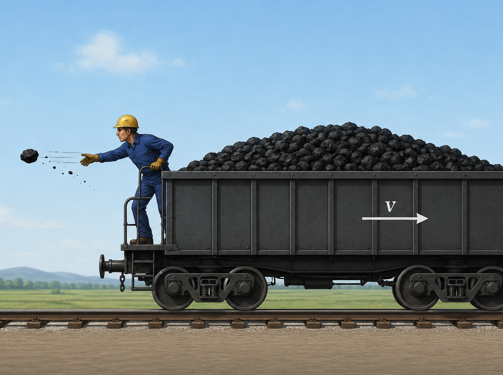
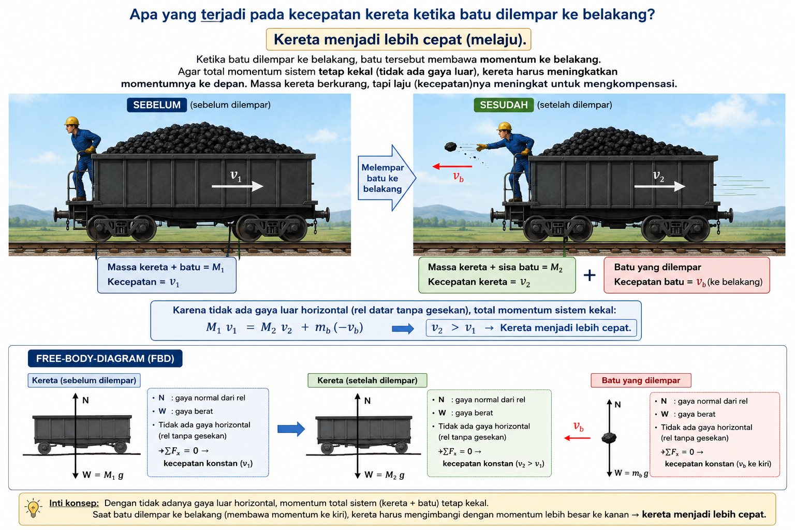
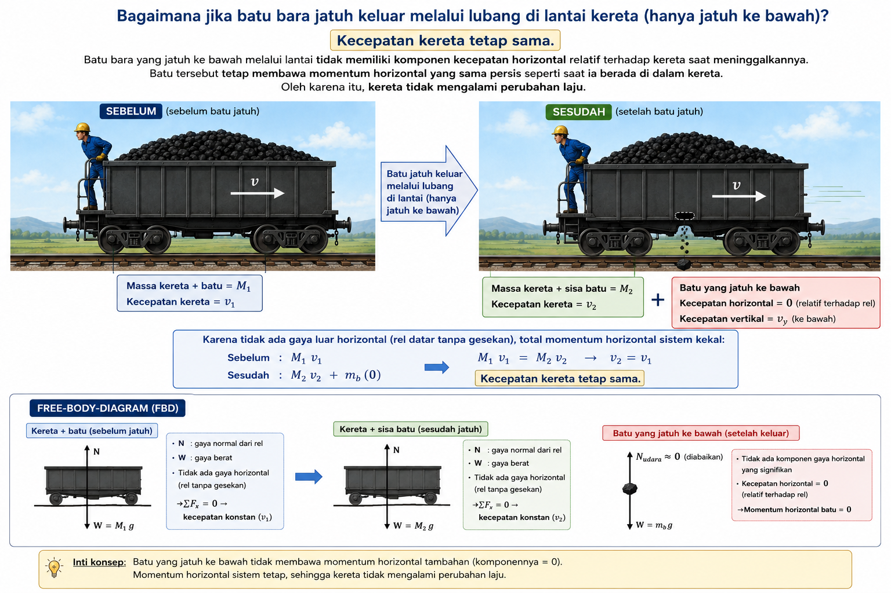
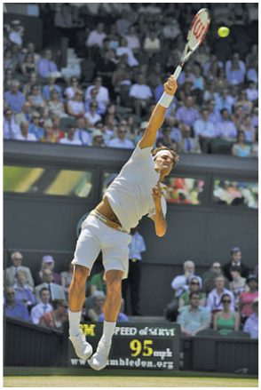
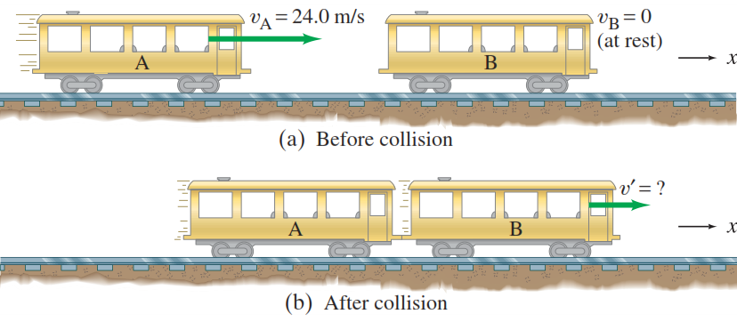
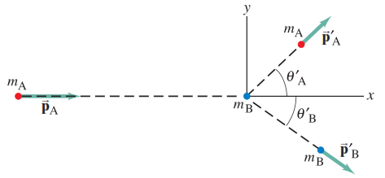
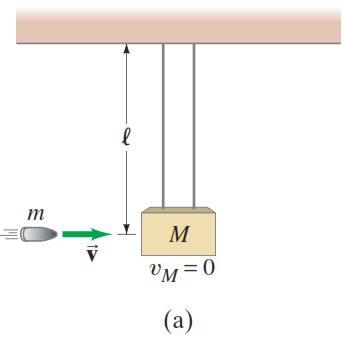
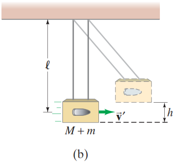

Momentum Linear & Tumbukan
Memahami kekekalan momentum dan bagaimana benda-benda saling bertukar gaya dan gerak saat bertumbukan.
Learning Outcomes
Setelah mempelajari bab ini, mahasiswa diharapkan mampu:
- Mendefinisikan momentum linear dan hubungannya dengan gaya
- Menjelaskan dan menerapkan Teorema Impuls-Momentum
- Menerapkan Hukum Kekekalan Momentum pada sistem terisolasi
- Membedakan tumbukan lenting sempurna dan tidak lenting sama sekali
- Menganalisis tumbukan dalam satu dimensi (1D) dan dua dimensi (2D)

Dosen Pengampu
Ir. Fidelis Gigih Triatmaja, S.T., M.T.
Dosen Fisika Dasar — Politeknik ATMI Surakarta
Gaya, Massa, dan Kecepatan
Perhatikan situasi berikut:
Gerbong Kereta Batu Bara
Sebuah gerbong kereta yang penuh batu bara meluncur di rel datar tanpa gesekan. Seorang pekerja di bagian belakang mulai melempar batu bara secara horizontal ke belakang dari kereta yang bergerak itu.
Apa yang terjadi pada kecepatan kereta?


Ketika batu dilempar ke belakang, batu tersebut membawa momentum ke belakang. Agar total momentum sistem tetap kekal (tidak ada gaya luar horizontal), kereta harus meningkatkan momentumnya ke depan. Massa kereta berkurang, tapi laju (kecepatan)nya meningkat untuk mengkompensasi.

Batu bara yang jatuh ke bawah melalui lantai tidak memiliki komponen kecepatan horizontal relatif terhadap kereta saat meninggalkannya. Batu tersebut tetap membawa momentum horizontal yang sama persis seperti saat ia berada di dalam kereta. Oleh karena itu, kereta tidak mengalami perubahan laju.
Refleksi Awal
Mengapa truk yang melaju lambat lebih sulit dihentikan daripada motor yang melaju kencang? Mengapa bola bowling lebih merusak pin dibanding bola pingpong dengan kecepatan yang sama? Jawabannya terletak pada kombinasi massa dan kecepatan, yang kita sebut: Momentum.
Momentum Linear ($\vec{p}$)
Momentum linear (atau disebut "momentum" saja) dari sebuah benda didefinisikan sebagai hasil kali massa dan kecepatannya.
Di mana:
- $\vec{p}$ = Momentum linear (kg·m/s)
- $m$ = Massa benda (kg)
- $\vec{v}$ = Kecepatan sesaat (m/s)
Besaran Vektor!
Karena kecepatan adalah vektor, momentum juga adalah vektor. Arah momentum selalu sama dengan arah kecepatan. Ini sangat krusial saat menganalisis tumbukan 2D nanti!
Simulasi Vektor Momentum
Atur massa dan kecepatan untuk melihat bagaimana vektor momentum $\vec{p}$ berubah secara real-time.
Hukum Newton II & Momentum
Hukum Newton II yang kita kenal ($\Sigma \vec{F} = m\vec{a}$) sebenarnya adalah bentuk khusus dari hukum yang lebih umum. Newton sendiri menyatakan hukumnya dalam bentuk perubahan momentum:
Di mana:
- $\Sigma \vec{F}$ = Gaya neto yang bekerja pada sistem
- $\Delta \vec{p}$ = Perubahan momentum ($\vec{p}_2 - \vec{p}_1$)
- $\Delta t$ = Selang waktu perubahan terjadi
Penurunan ke Bentuk $F=ma$
Jika massa benda konstan ($m_1 = m_2 = m$), maka:
Karena $F=ma$ mengasumsikan massa konstan. Namun, pada sistem seperti roket, massa bahan bakar terus berkurang saat ditembakkan. Hukum $F = \frac{\Delta p}{\Delta t}$ tetap berlaku, sementara $F=ma$ menjadi tidak valid!
Impuls & Teorema Impuls-Momentum
Dari persamaan Hukum Newton II sebelumnya, jika kita kalikan kedua ruas dengan $\Delta t$, kita mendapatkan konsep Impuls.
Definisi Impuls ($\vec{J}$)
Impuls adalah hasil kali gaya rata-rata dengan selang waktu bekerjanya gaya tersebut.
Teorema Impuls-Momentum:
Impuls yang diberikan pada suatu benda sama dengan perubahan momentum benda tersebut. $\vec{J} = \Delta \vec{p}$
Simulasi: Waktu Tumbukan vs Gaya
Seseorang melompat dengan perubahan momentum konstan. Ubah waktu tumbukan ($\Delta t$) untuk melihat efeknya pada gaya rata-rata!
Aplikasi Keseharian: Mengurangi Gaya
Karena $\Delta p$ seringkali tetap dalam suatu tumbukan, satu-satunya cara untuk mengurangi gaya ($F$) yang merusak adalah dengan memperbesar waktu tumbukan ($\Delta t$). Inilah mengapa:
- Kita melipat kaki saat mendarat dari lompatan.
- Boxer mengikuti pukulan (move with the punch) agar tidak terkapar.
- Mobil memiliki crumple zone (zona kerut) yang sengaja deformasi saat tabrakan.
Gaya pada Servis Tenis
Untuk pemain top, bola tenis bisa meninggalkan raket pada servis dengan kecepatan sekitar 55 m/s (sekitar 120 mi/h). Jika bola bermassa 0,060 kg dan bersentuhan dengan raket selama sekitar 4 ms ($4 \times 10^{-3}$ s), perkirakan gaya rata-rata pada bola. Apakah gaya ini cukup besar untuk mengangkat orang bermassa 60 kg?
- Massa bola, $m = 0,060$ kg
- Kecepatan awal, $v_1 \approx 0$ (bola dilempar pelan ke atas)
- Kecepatan akhir, $v_2 = 55$ m/s
- Waktu kontak, $\Delta t = 4 \times 10^{-3}$ s

IlustrasiLangkah Penyelesaian
Momentum berubah dari nol (saat hampir diam di udara) menjadi $m\vec{v}_2$. Kita mengabaikan gaya gravitasi selama kontak singkat ini karena jauh lebih kecil daripada gaya raket.
Gunakan Teorema Impuls-Momentum: $\vec{J} = \Delta \vec{p} = \vec{F}_{avg}\Delta t$
Gaya rata-rata yang bekerja pada bola tenis adalah 825 N. Bagaimana angka ini secara fisika?
Berat orang bermassa 60 kg adalah $w = mg = (60)(9,8) \approx 600$ N.
Kekekalan Momentum Linear
Konsep momentum sangat powerful karena sifatnya yang kekal (conserved). Jika tidak ada gaya luar neto yang bekerja pada suatu sistem, total momentum sistem tersebut tidak akan berubah.
Syarat Kekekalan Momentum:
Berlaku jika dan hanya jika gaya luar neto pada sistem adalah nol ($\Sigma \vec{F}_{ext} = 0$).
Sistem seperti ini disebut sistem terisolasi. Gaya-gaya internal (saling bertumbukan) boleh ada, karena menghasilkan impuls yang sama besar dan berlawanan arah sehingga saling meniadakan.
Derivasi Matematis
Saat benda A dan B bertumbukan, gaya yang dikerahkan A pada B sama besar namun berlawanan arah dengan gaya B pada A:
Karena waktu kontak $\Delta t$ sama, impuls pada A dan B juga sama besar namun berlawanan:
Perubahan momentum A sama dengan negatif perubahan momentum B.
Jika $\Delta \vec{p}_A = -\Delta \vec{p}_B$, maka total perubahan momentum sistem adalah nol:
Jenis-Jenis Tumbukan
Tumbukan terjadi ketika dua benda saling bersentuhan dalam waktu yang sangat singkat. Kita mengklasifikasikan tumbukan berdasarkan apakah energi kinetik ikut kekal atau tidak.
Lenting Sempurna
(Elastic)
Energi kinetik total sistem dilestarikan (tidak ada yang hilang jadi panas/bunyi).
Lenting Sebagian
(Inelastic)
Sebagian energi kinetik berubah jadi bentuk energi lain (panas, deformasi). Benda tidak menyatu.
Tidak Lenting Sama Sekali
(Perfectly Inelastic)
Benda-benda saling menempel dan bergerak bersama setelah tumbukan. Kehilangan energi kinetik maksimal.
Aturan Emas Tumbukan:
Terlepas dari jenis tumbukannya (lenting atau tidak), Hukum Kekekalan Momentum SELALU berlaku selama tidak ada gaya luar neto! Energi kinetik mungkin tidak kekal, tapi momentum selalu kekal.
Tumbukan Tidak Lenting Sama Sekali
Kasus paling sederhana: Dua benda bertumbukan dan menyatu. Mari kita gunakan Hukum Kekekalan Momentum untuk menemukan kecepatan akhirnya.
Bagaimana dengan Energi Kinetik?
Karena benda menyatu, selalu ada kehilangan energi kinetik. Energi ini diubah menjadi panas, bunyi, dan merusak bentuk benda (deformasi). Mari kita hitung berapa besar kerugiannya di simulasi ini!
Simulasi: Tabrakan Kereta Api
Kereta A melaju menabrak Kereta B yang diam. Keduanya lalu menyatu. Atur variabelnya!
Contoh Soal: Gerbong Kereta
Sebuah gerbong kereta bermassa 10 ton melaju dengan kecepatan 24,0 m/s menabrak gerbong identik yang diam. Jika mereka saling mengait, berapa kecepatan mereka sesudah tumbukan dan berapa energi kinetik yang hilang?

IlustrasiGunakan kekekalan momentum untuk tumbukan tidak lenting (konversi 10 ton = 10.000 kg):
Bandingkan Energi Kinetik sebelum dan sesudah tumbukan:
Energi yang hilang (berubah jadi panas/bunyi/deformasi):
Tumbukan Lenting Sempurna (1D)
Pada tumbukan lenting sempurna (elastic collision), selain momentum, energi kinetik total sistem juga kekal. Tidak ada energi yang hilang menjadi panas atau bunyi.
$$ m_A v_A + m_B v_B = m_A v'_A + m_B v'_B $$
$$ \frac{1}{2}m_A v_A^2 + \frac{1}{2}m_B v_B^2 = \frac{1}{2}m_A v'^2_A + \frac{1}{2}m_B v'^2_B $$
Derivasi Rumus Cepat (1 Dimensi)
Menghitung tumbukan lenting dengan persamaan kuadratik sulit. Mari kita turunkan rumus praktis yang lebih sederhana:
Dari Kekekalan Momentum, pindahkan suku-suku $m_A$ ke kiri dan $m_B$ ke kanan:
Dari Kekekalan Energi Kinetik, lakukan hal yang sama:
Gunakan identitas aljabar $a^2 - b^2 = (a-b)(a+b)$ pada ruas kiri dan kanan:
Bagi persamaan hasil langkah 2 dengan persamaan hasil langkah 1. Suku $m_A(v_A - v'_A)$ akan coret dengan $m_B(v'_B - v_B)$:
Atau dapat ditulis ulang menjadi rumus cepat:
Kasus Khusus: Massa Sama ($m_A = m_B$)
Apa yang terjadi jika Bola A menabrak Bola B yang diam, dan keduanya bermassa sama? Gunakan rumus cepat di atas:
Dengan $m_A = m_B = m$ dan $v_B = 0$, Kekekalan Momentum menjadi:
Rumus Cepat menjadi:
Jumlahkan persamaan (i) dan (ii):
Kesimpulan: Bola A berhenti total, Bola B bergerak persis dengan kecepatan awal A. Ini yang terjadi pada ayunan Newton!
Tumbukan 2 Dimensi
Di dunia nyata, tumbukan sering terjadi tidak searah (1D), melainkan miring (2D). Karena momentum adalah vektor, Hukum Kekekalan Momentum harus berlaku pada setiap sumbu secara terpisah!
Kekekalan Momentum Sumbu-X & Y:
Ekspansi Vektor (Sumbu X dan Y):
Jika benda A menabrak benda B (awalnya diam) membentuk sudut $\theta'_A$ dan $\theta'_B$ terhadap sumbu-x:
Untuk tumbukan lenting sempurna dengan massa sama, salah satu diam, sudut antara kedua benda setelah tumbukan selalu $90^\circ$ ($\theta'_A + \theta'_B = 90^\circ$).

Ilustrasi Tumbukan Tidak Segaris (Klik untuk perbesar)Latihan Soal: Biliar 2D
Bola biliar A bergerak dengan kecepatan 3,0 m/s menabrak bola B yang identik dan diam. Setelah tumbukan lenting sempurna, bola A memantul membentuk sudut $45^\circ$ di atas sumbu-x, dan bola B bergerak membentuk sudut $45^\circ$ di bawah sumbu-x. Berapa kecepatan masing-masing bola setelah tumbukan?
Karena awalnya tidak ada momentum di sumbu-Y, total momentum sumbu-Y setelah tumbukan harus nol:
Karena massa sama dan $\sin(45^\circ) = \sin(-45^\circ)$ (hanya beda tanda), satu-satunya cara agar jumlahnya nol adalah:
Momentum awal hanya di sumbu-X. Substitusikan $v'_A = v'_B$ ke persamaan sumbu-X:
Maka, kecepatan masing-masing bola adalah:
Pendulum Balistik
Pendulum balistik adalah alat untuk mengukur kecepatan peluru. Sebuah peluru bermassa $m$ ditembakkan horizontal dan menyangkut di balok kayu bermassa $M$ yang digantung. Keduanya lalu berayun naik mencapai ketinggian maksimum $h$.
- Massa peluru, $m$
- Massa balok, $M$
- Ketinggian ayunan maksimum, $h$

Saat Tumbukan
Saat Ketinggian MaksLangkah Penyelesaian (2 Tahap)
Saat peluru menghantam balok, terjadi tumbukan tidak lenting sama sekali. Gunakan kekekalan momentum sesaat sebelum dan sesudah tumbukan:
Di mana $v'$ adalah kecepatan balok+peluru segera setelah tumbukan (sebelum mulai naik).
Setelah tumbukan, sistem berayun naik. Gaya tegangan tali tidak melakukan usaha, sehingga energi mekanik kekal. Energi kinetik sesudah tumbukan berubah jadi energi potensial gravitasi di ketinggian $h$.
Massa $(m+M)$ dicoret, kita dapatkan kecepatan awal ayunannya:
Substitusikan persamaan $v'$ dari Tahap 2 ke persamaan momentum di Tahap 1:
Maka, kecepatan awal peluru adalah:
Latihan Soal
Sebuah peluru bermassa 10 g ditembakkan horizontal dan menyangkut di balok kayu bermassa 2,0 kg yang digantung. Jika balok dan peluru berayun naik mencapai ketinggian 15 cm, berapakah kecepatan peluru saat keluar dari laras senapan?
Diketahui: $m = 0,010$ kg, $M = 2,0$ kg, $h = 0,15$ m.
Tahap 2 (Energi Mekanik): Cari $v'$ terlebih dahulu:
Tahap 1 (Momentum): Cari $v$:
Peta Konsep: Momentum & Tumbukan
Poin Penting yang Harus Diingat:
Terima Kasih!
Momentum tidak pernah musnah; ia hanya berpindah dan berubah bentuk. Seperti hidup, teruslah bergerak maju!
Politeknik ATMI Surakarta — Teknik Mesin Industri